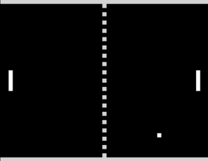

Pong est l'un des premiers jeux vidéo d'arcade, sorti en 1972 et développé par Atari.
Il simule un jeu de tennis de table en utilisant des graphismes très simples. Ce jeu a contribué à populariser l’industrie du jeu vidéo.
Il n'y a malheureusement pas grand chose à dire sur ce jeu étant donné que c'est l'un des pionniers des jeux vidéos avec très peu de ressources disponibles, montrant ansi que les jeux ont beaucoup évolué en un demi siècle.
Voici une partie de Pong en action